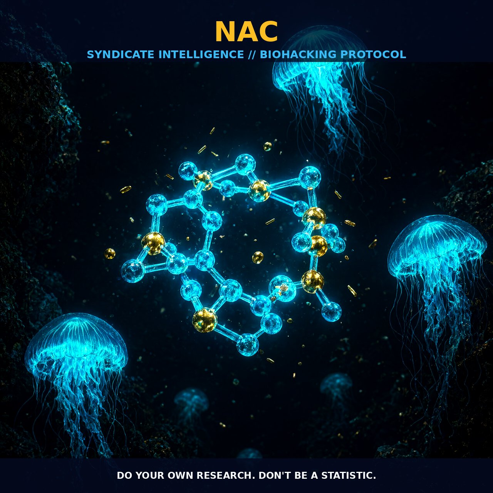

N-acetylcysteine: Dynamic Thiol Modulation and Glutamate Homeostasis

1. The Molecular Architecture of NAC
N-acetylcysteine (NAC) is far more than a passive antioxidant; it functions as a dynamic thiol modulator. Its chemical behavior is dictated by a distinct pKa of approximately 9.51 to 9.87, which sits notably higher than glutathione or cysteine. This elevated pKa ensures that at physiological pH, NAC remains predominantly in its protonated form, granting it the unique ability to efficiently reduce disulfide bonds in proteins and disrupt ligand bonding with precision.
Beyond direct redox chemistry, NAC acts as a prodrug for hydrogen sulfide and sulfane sulfur species. It reacts rapidly with high-energy radicals—such as hydroxyl, nitrite, and carbonate—initiating powerful antioxidant cascades. Its small molecular size allows it to penetrate sterically less accessible cellular spaces, maintaining redox balance in crowded intracellular environments where larger reducing molecules may falter.
2. Neurotransmission and Glutamate Homeostasis
The primary leverage point for NAC lies in its modulation of glutamate homeostasis. By driving the cystine/glutamate antiporter, NAC decreases extracellular glutamate levels and suppresses metabotropic glutamate receptors (mGluR2/3). This mechanism corrects excitotoxic damage, a key factor in conditions ranging from schizophrenia to addiction.
Research indicates that NAC stabilizes neural signaling networks, particularly within the nucleus accumbens, supporting cognitive clarity and emotional regulation. For high-stress biohackers, this means more than just antioxidant protection; it represents a corrective pathway for synaptic release, ensuring stable neural firing under metabolic load.
3. Dual Action on Inflammation and Calcium Signaling
NAC exerts significant influence over intracellular calcium regulation and inflammatory pathways. It modulates receptor-mediated calcium release, addressing dysregulations often documented in neurological contexts. Simultaneously, it inhibits NF-κB-mediated production of nitric oxide in macrophages, glial cells, and astrocytes.
This dual action on excitotoxicity and neuroinflammation supports sustained mental performance and cellular resilience. By dampening inflammatory signals while stabilizing calcium flux, NAC provides a robust framework for long-term cellular integrity during periods of physical or metabolic stress.
4. Tactical Implementation and Kinetic Profile
For optimal systemic distribution, the neutral form of NAC predominates at a pH below 3.3. This allows for efficient passive diffusion through the gastric fluid, where stomach acidity typically ranges from 1.5 to 3.3, facilitating superior membrane penetration before entering systemic circulation.
Once in the blood, NAC undergoes N-deacetylation or active transport to enter tissues. While intravenous routes show robust brain uptake, oral bioavailability varies depending on Blood-Brain Barrier (BBB) integrity. Consistent supplementation is key to maintaining intracellular thiol levels without overwhelming the system with sterically bulky antioxidants, particularly through the activation of SIRT3-SOD2/Gpx4 pathways.
Prostar Life Hack
Optimize your stack by pairing NAC with other thiols to maximize synergistic redox effects. Monitor your energy metabolism and cognitive steadiness over time; because NAC's effects are cumulative, consistent daily intake is more critical than high-dose spikes for stabilizing glutamate excitotoxicity in real-time.
Prostar Life Hack
Optimize your stack by pairing NAC with other thiols to maximize synergistic redox effects. Monitor your energy metabolism and cognitive steadiness over time; because NAC's effects are cumulative, consistent daily intake is more critical than high-dose spikes for stabilizing glutamate excitotoxicity in real-time.
[ AUTHOR: LEAD TECHNICAL RESEARCHER ]